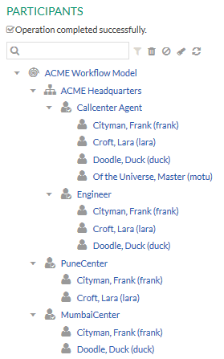
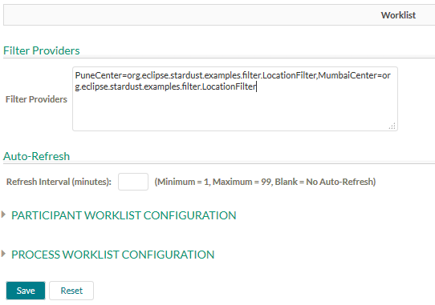

This tutorial helps you to create and apply worklist filter from the Portal Configuration.
Using this example, you can:
Download the Support Case model.
You can find the example source code as well as the complete
model in the following ZIP file in folder support-case:
You need to extend the example model with the following elements:
Create the java file named LocationFilter.java.
By creating the filter provider, you can control the viewing of worklist of a particular location or role. For more information, please refer to chapter Configuring Worklists in the Stardust Portal documentation.
Note you can specify the filter based on your requirement. The following is the sample
code snippet to create the LocationFilter.java class:
package org.eclipse.stardust.examples.filter;
import java.util.Iterator;
import java.util.List;
import org.eclipse.stardust.ui.web.viewscommon.beans.SessionContext;
import org.eclipse.stardust.ui.web.viewscommon.common.provider.AbstractFilterProvider;
import org.eclipse.stardust.engine.api.query.DataFilter;
import org.eclipse.stardust.engine.api.query.FilterAndTerm;
import org.eclipse.stardust.engine.api.query.FilterOrTerm;
import org.eclipse.stardust.engine.api.query.Query;
import org.eclipse.stardust.engine.api.runtime.Grant;
import org.eclipse.stardust.engine.api.runtime.User;
public class LocationFilter extends AbstractFilterProvider
{
private static final long serialVersionUID = 1L;
/* (non-Javadoc)
* @see org.eclipse.stardust.ui.web.client.common.spi.IFilterProvider#applyFilter(org.eclipse.stardust.engine.api.query.Query)
*/
public void applyFilter(Query query)
{
System.out.println("Applying Filter Provider - LocationFilter.applyFilter()");
User user = SessionContext.findSessionContext().getUser();
boolean puneCenter = false;
boolean mumbaiCenter = false;
List<Grant> grants = (List<Grant>) user.getAllGrants();
Iterator<Grant> iterator = grants.iterator();
while (iterator.hasNext())
{
Grant grant = iterator.next();
if (grant.getId().equalsIgnoreCase("PuneCenter"))
{
puneCenter = true;
}
if (grant.getId().equalsIgnoreCase("MumbaiCenter"))
{
mumbaiCenter = true;
}
}
System.out.println("puneCenter = " + puneCenter + ":: mumbaiCenter = " + mumbaiCenter);
if (puneCenter && mumbaiCenter)
{
FilterOrTerm filter = query.getFilter().addOrTerm();
filter.add(DataFilter.like("SupportCaseData", "Location", "%Pune%", false));
filter.add(DataFilter.like("SupportCaseData", "Location", "%Mumbai%", false));
}
else if (puneCenter)
{
FilterAndTerm filter = query.getFilter().addAndTerm();
filter.add(DataFilter.like("SupportCaseData", "Location", "%Pune%", false));
}
else if (mumbaiCenter)
{
FilterAndTerm filter = query.getFilter().addAndTerm();
filter.add(DataFilter.like("SupportCaseData", "Location", "%Mumbai%", false));
}
else
{
System.out.println("NOT Applying any Filter");
}
}
}
Add the LocationFilter.java file in the src folder of the project in
which you have added the Support Case model.
Make sure that the LocationFilter.java file is under the package called
org.eclipse.stardust.examples.filter.
Perform the following steps:

Figure: Role assignments
puneCenter=org.eclipse.stardust.examples.filter.LocationFilter,mumbaiCenter=org.eclipse.stardust.examples.filter.LocationFilter
The following screenshot displays the filter provider details:

Figure: Worklist Configuration
In case both roles are assigned to one user and only puneCenter=org.eclipse.stardust.examples.filter.LocationFilter is applied then that user can see the activities of the location Pune.